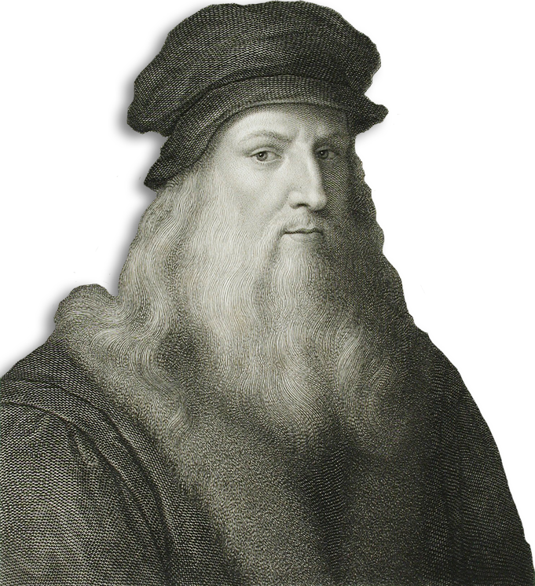
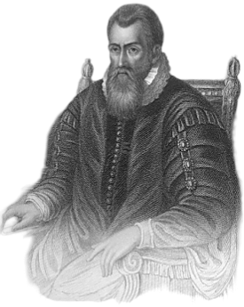
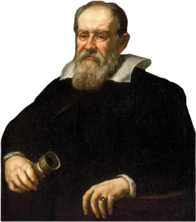

Contradicția nu este un semn de falsitate, nici lipsa contradicției un semn de adevăr
- Balise Pascal -
Renașterea
Renașterea a fost o perioadă de redescoperire a cunoașterii antice și de revigorare intelectuală în Europa. După secole de stagnare relativă, gândirea științifică și matematică a renăscut, fiind influențată de traducerile lucrărilor grecești și arabe. Apare interesul pentru aplicarea matematicii în artă, arhitectură și științe naturale. Metodele empirice încep să se combine cu raționamentul logic, punând bazele științei moderne. În această perioadă au apărut și primele lucrări tipărite de matematică, ceea ce a permis o răspândire mai largă a ideilor.
Leonardo da Vinci (1452 – 1519) a fost un geniu renascentist, cunoscut mai ales ca pictor și inventator, dar și un pasionat de matematică. Deși nu a fost matematician în sens clasic, a aplicat matematica în studiile sale de proporție, perspectivă, geometrie și inginerie, folosind concepte matematice pentru a descompune și înțelege lumea vizuală. Un aspect interesant este fascinația lui pentru secțiunea de aur și modul în care a aplicat proporții matematice în operele sale artistice, cum ar fi în „Omul Vitruvian”. De asemenea, a realizat studii de geometrie avansată și a explorat concepte precum simetria și proporția în natură, demonstrând legătura profundă dintre artă și știință.

Leonardo da Vinci
François Viète (1540 – 1603) a fost un matematician francez considerat părintele algebrei moderne simbolice. A introdus folosirea sistematică a literelor pentru a reprezenta atât necunoscutele cât și coeficienții în ecuații, revoluționând astfel modul în care erau rezolvate problemele algebrice. Viète a fost și un om implicat politic, fiind consilierul regelui Franței, și a folosit coduri și criptografie bazate pe matematică în serviciile secrete ale curții. Un fapt interesant este că a fost primul care a folosit termenul „coeficient” în matematică, un concept esențial în algebra modernă.
François Viète
John Napier (1550 – 1617) a fost un matematician scoțian cunoscut mai ales pentru inventarea logaritmilor. Logaritmii lui Napier au simplificat calculele complicate din astronomie și trigonometrie, reducând înmulțirile și împărțirile la adunări și scăderi. Un fapt interesant este că Napier a fost și un inventator excentric, dezvoltând dispozitive mecanice pentru război și un precursor al calculatorului – „oasele lui Napier”. Acestea erau un set de bastoane cu mărci care permiteau efectuarea rapidă a înmulțirilor și împărțirilor, demonstrând ingeniozitatea sa în aplicarea matematicii în viața cotidiană.

John Napier
Galileo Galilei (1564 – 1642) a fost un fizician, astronom și matematician italian, adesea considerat părintele științei moderne. A aplicat matematica în studiul mișcării și a folosit metode experimentale combinate cu raționamente matematice, contribuind astfel la fundamentarea mecanicii clasice. Curiozitatea legată de Galileo este că a fost pus sub arest la domiciliu pentru teoriile sale heliocentrice, în ciuda faptului că demonstrațiile sale erau susținute de observații științifice riguroase. Un alt aspect fascinant este că a folosit telescopul pentru a observa Jupiter și sateliții săi, demonstrând astfel că nu toate corpurile cerești orbitează în jurul Pământului, ceea ce a revoluționat astronomia.

Galileo Galilei
Johannes Kepler (1571 – 1630) a fost un astronom și matematician german, cunoscut pentru cele trei legi ale mișcării planetare. Folosind datele observaționale ale lui Tycho Brahe, Kepler a formulat legi matematice precise care descriu orbitele eliptice ale planetelor în jurul Soarelui. Un fapt interesant este că Kepler a căutat armonii matematice în sistemul solar, inspirându-se din muzică și geometrie sacră – încercând să găsească ordinea divină în mișcările cerești. Un alt aspect fascinant este că a fost un susținător al heliocentrismului lui Copernic și a folosit observațiile sale pentru a demonstra că Pământul nu este centrul universului, contribuind astfel la revoluția științifică.